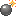
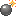

2017/1029Sun雨の日なにしよう
こんばんは。
CDTVハロウィンライブでは保母さんのコスプレをしました〜
乃木坂に入る前は幼稚園の先生を目指して勉強していたのでもし幼稚園の先生になっていたらこんな感じやったのかなぁなんて思いながら☺︎
そして昨日は横浜で個別握手会！


制服〜。

うさぎ未央奈とニコル君(愛犬に似た人形)
生誕祭もありました。
たくさんの方がお祝いしてくださり、お花もいっぱいで幸せでした☺︎

ありがとうございました！
まだお花の写真もあるので更新をお待ちください〜
皆さん風邪にはお気をつけて...
10/31 23:15〜 ソノサキ
バナナマンさん、安藤なつさんと出させていただきました♪
何だか安心感のある現場でした。
ではでは！
2017/10/29 19:24
コメント(564)
ブログ更新ありがとー！！
制服もうさぎ未央奈もめっちゃ似合ってるな！
CDTVの時のコスプレマジで未央奈だけ何のコスプレかわかんなくて園児かなんかかな〜と思ってたら保母さんだったのか笑
ソノサキ絶対見るね！
ひろっぴー
制服もうさぎ未央奈もめっちゃ似合ってるな！
CDTVの時のコスプレマジで未央奈だけ何のコスプレかわかんなくて園児かなんかかな〜と思ってたら保母さんだったのか笑
ソノサキ絶対見るね！
ひろっぴー
保母さんの服似合ってたから
また握手会で来て欲しいなー
また握手会で来て欲しいなー
写真集予約しました❤️
楽しみ〜！
楽しみ〜！
みおたん、お疲れ様です！
ソノサキの予告写真見たけど、
未央奈、ちっちゃ！
安藤なつさんの三分の一！笑
そういえば、さんま御殿でも、なつさんの隣！
思い出した！
なつさんがいると、未央奈が一層、可愛くて綺麗に見える！
写真集の表紙はのりさんが言ってたように、天使だし！
TGCのあかんべーは超絶可愛いし、最高だ！
写真集早く見たいよ！
待ちどうしい！
乃木中、未央奈のワイプだけ見てました！
おやすみおな！
それでは健康第一で！
信州のミッキイでした！
ソノサキの予告写真見たけど、
未央奈、ちっちゃ！
安藤なつさんの三分の一！笑
そういえば、さんま御殿でも、なつさんの隣！
思い出した！
なつさんがいると、未央奈が一層、可愛くて綺麗に見える！
写真集の表紙はのりさんが言ってたように、天使だし！
TGCのあかんべーは超絶可愛いし、最高だ！
写真集早く見たいよ！
待ちどうしい！
乃木中、未央奈のワイプだけ見てました！
おやすみおな！
それでは健康第一で！
信州のミッキイでした！
こんばんは。セブンやよ(*・∀-*)ﾉ
今日も1日お疲れ様でした
生誕の集合写真ギリギリ白髪と耳写ってた(o^^o)v
次会えるのは来年だなぁ
長い…寂しいよ〜(＞＜)
昨日の今日なのにもう会いたい♡
次はもっと上手く話せるといいな。
明日も1日楽しもうd(@^∇ﾟ)/ﾌｧｲﾄｯ♪
(≧▽≦♡)ダイスキダァ！
おやすみおな⭐︎
今日も1日お疲れ様でした
生誕の集合写真ギリギリ白髪と耳写ってた(o^^o)v
次会えるのは来年だなぁ
長い…寂しいよ〜(＞＜)
昨日の今日なのにもう会いたい♡
次はもっと上手く話せるといいな。
明日も1日楽しもうd(@^∇ﾟ)/ﾌｧｲﾄｯ♪
(≧▽≦♡)ダイスキダァ！
おやすみおな⭐︎
改めて、お誕生日おめでとうございます！
生誕祭行きたかったです…
東京ドームのために体調管理気をつけます！未央奈さんも気をつけてください！
生誕祭行きたかったです…
東京ドームのために体調管理気をつけます！未央奈さんも気をつけてください！
堀ちゃんが出てる番組は全部見ます～！バナナマンさんも出ているなら確かに安心感ありそう
未央奈〜！
制服かわいすぎる！！
ソノサキ見るで〜
制服かわいすぎる！！
ソノサキ見るで〜
みおなの制服超可愛い♫
CDTVもみたよぉ！！！
CDTVもみたよぉ！！！
未央奈、ブログの更新ありがとう
未央奈が保母さんを目指してたのを知っていたからCDTVのコスプレが保母さんだって気付いたよ。
握手会お疲れ様でした。
制服、うさぎ、誕生記念Tシャツ、どれも似合っていたし可愛かったよ。
そういえは、5部はうさぎって755に書いてあったけど、うさぎじゃなかったね。でも未央奈は黒色の服装を着ると大人っぽくて綺麗になるから個人的には好きなので、全然OKだよ。
誕生祭では、まさか手紙が葉月ちゃんからだとは思っていなかったからビックリしたけど、3期生に優しくするお姉さん未央奈が見れて良かったな～
ソノサキは見逃さないように予約したよ。
未央奈もカゼに気をつけてね。
東京ドームの準備等で忙しいだろうけど、未央奈ファイト
ごろ～
未央奈が保母さんを目指してたのを知っていたからCDTVのコスプレが保母さんだって気付いたよ。
握手会お疲れ様でした。
制服、うさぎ、誕生記念Tシャツ、どれも似合っていたし可愛かったよ。
そういえは、5部はうさぎって755に書いてあったけど、うさぎじゃなかったね。でも未央奈は黒色の服装を着ると大人っぽくて綺麗になるから個人的には好きなので、全然OKだよ。
誕生祭では、まさか手紙が葉月ちゃんからだとは思っていなかったからビックリしたけど、3期生に優しくするお姉さん未央奈が見れて良かったな～
ソノサキは見逃さないように予約したよ。
未央奈もカゼに気をつけてね。
東京ドームの準備等で忙しいだろうけど、未央奈ファイト
ごろ～
みおちゃん、ブログ更新ありがとう！
このごろ沢山更新してくれて嬉しいです！でも誕生日の時のブログ以降、コメントできてませんでした泣
前のコメントとかも読んでもらえるとわかると思いますが、東京ドームの一日目に参加します！
昨日から発券が開始して、モバイル１次で当ててたのでちょっと期待してたけど、さすがにアリーナは無理でした。
でも一階の三塁側！ステージから見て、左側です！見切れに近いぐらい端っこだけど、全力で応援します！！！！
みおちゃんのタオルは、今回の、神宮の時にかったやつ、5thバスラの三枚持ってくので、ぜひ見つけて下さい！生誕Ｔも着ていきます！
多分ステージから遠いいので見えないとは思いますが…
すっごく楽しみ～！！！！
ではおやすみおな♪
このごろ沢山更新してくれて嬉しいです！でも誕生日の時のブログ以降、コメントできてませんでした泣
前のコメントとかも読んでもらえるとわかると思いますが、東京ドームの一日目に参加します！
昨日から発券が開始して、モバイル１次で当ててたのでちょっと期待してたけど、さすがにアリーナは無理でした。
でも一階の三塁側！ステージから見て、左側です！見切れに近いぐらい端っこだけど、全力で応援します！！！！
みおちゃんのタオルは、今回の、神宮の時にかったやつ、5thバスラの三枚持ってくので、ぜひ見つけて下さい！生誕Ｔも着ていきます！
多分ステージから遠いいので見えないとは思いますが…
すっごく楽しみ～！！！！
ではおやすみおな♪
堀ちゃんこんばんわー
生誕祭みたよー
挨拶よかったです。これからも頑張っていこうね
応援してます
握手会もありがとー
未央奈見れなかったの死ぬほど後悔してます、、、、
車パンクさえしなければ、、、、
ドームは行けないので次は写真集のお渡し会かなー
それを楽しみに頑張ります
堀ちゃんも体調崩さないようにね！ドームも楽しめるよう祈ってます
では！
生誕祭みたよー
挨拶よかったです。これからも頑張っていこうね
応援してます
握手会もありがとー
未央奈見れなかったの死ぬほど後悔してます、、、、
車パンクさえしなければ、、、、
ドームは行けないので次は写真集のお渡し会かなー
それを楽しみに頑張ります
堀ちゃんも体調崩さないようにね！ドームも楽しめるよう祈ってます
では！
保母さんコスプレも、制服も、うさぎちゃんも全部似合いすぎ！ほんとすき かわいい
かわいい
写真集楽しみすぎてウキウキじゃー
写真集楽しみすぎてウキウキじゃー
他番組にバナナマンと共演してるの見ると、超嬉しいよ！
ババババン！バナナマン！！
ババババン！バナナマン！！
ブログ待ってました！！
初めて未央奈と握手したんですけどとっても楽しかったです！小指繋ぎも2回していただいて…恥ずかしかったけど思い出になりました。
あ！ウサギ最高でした♡
一月の全握、未央奈のレーン並ぶことにしました。待っててください。未央奈推します！
初めて未央奈と握手したんですけどとっても楽しかったです！小指繋ぎも2回していただいて…恥ずかしかったけど思い出になりました。
あ！ウサギ最高でした♡
一月の全握、未央奈のレーン並ぶことにしました。待っててください。未央奈推します！
うさぎ未央奈見たかったぁ
今度の京都待ってます！！
今度の京都待ってます！！
更新ありがとう～
握手会楽しかった
幼稚園の先生のコスプレ似合うね可愛いいな！
台風はもう過ぎたので明日は晴れだね！風邪には気おつけてね！
コメ読みお疲れ様でした！
握手会楽しかった
幼稚園の先生のコスプレ似合うね可愛いいな！
台風はもう過ぎたので明日は晴れだね！風邪には気おつけてね！
コメ読みお疲れ様でした！
こんばんは。ブログ更新ありがとうございます。
CDTV見ましたよ～。ちなみに私の初恋は幼稚園の先生でした！
握手会お疲れ様でしたー。生誕祭、私はまだ参加したことがないですが、一度誰かの生誕祭に参加してみたいです。
ではまた。
CDTV見ましたよ～。ちなみに私の初恋は幼稚園の先生でした！
握手会お疲れ様でしたー。生誕祭、私はまだ参加したことがないですが、一度誰かの生誕祭に参加してみたいです。
ではまた。
堀ちゃん、制服似合う！
ソノサキ楽しみや
ソノサキ楽しみや
こんばんは。
41歳二児の父、走ることと歌うことが大好きなサラリーマン、埼玉のボインキラーです。
保母さん可愛過ぎる。もし自分の子供が通う幼稚園の先生が未央奈だったら良からぬ気持ちを抱いてしまいそう。
うちの子はもう上が中２(女)下が小５(男)なので今は昔ですが。
今日あさひなぐ観てきたよ。もうやってる所も少なくて。１番近いさいたま新都心はもうやってなくて川越市の南古谷に行きました。
実は映画館に行くのは崖の上のポニョ以来。上の子が幼稚園の時だから8年～9年くらい前だ。
舞台で１番印象に残ったのが一堂寧々だったんですが、映画では少しセリフが少なくて、未央奈寧々の方がインパクトありました。
映画では旭ちゃんのドジっぷりと顧問の先生が面白過ぎた。
笑いあり涙ありでしたね。
41歳二児の父、走ることと歌うことが大好きなサラリーマン、埼玉のボインキラーです。
保母さん可愛過ぎる。もし自分の子供が通う幼稚園の先生が未央奈だったら良からぬ気持ちを抱いてしまいそう。
うちの子はもう上が中２(女)下が小５(男)なので今は昔ですが。
今日あさひなぐ観てきたよ。もうやってる所も少なくて。１番近いさいたま新都心はもうやってなくて川越市の南古谷に行きました。
実は映画館に行くのは崖の上のポニョ以来。上の子が幼稚園の時だから8年～9年くらい前だ。
舞台で１番印象に残ったのが一堂寧々だったんですが、映画では少しセリフが少なくて、未央奈寧々の方がインパクトありました。
映画では旭ちゃんのドジっぷりと顧問の先生が面白過ぎた。
笑いあり涙ありでしたね。
堀ちゃんの保母さん、いいな(´▽｀)
握手会、お疲れ様でした♪
握手会、お疲れ様でした♪
未央奈ちゃん、ブログの更新ありがとう。未央奈ちゃんも風邪には気をつけてね
未央奈の生誕祭行きたかったなあ〜
生誕祭行けなかったけど、未央奈へのメッセージカードに私の想いを書いたので見てね〜♡
あと、1週間ちょっとで東京ドーム公演！リハーサルや準備頑張ってね
生誕祭行けなかったけど、未央奈へのメッセージカードに私の想いを書いたので見てね〜♡
あと、1週間ちょっとで東京ドーム公演！リハーサルや準備頑張ってね
ブログ更新ありがとう!!
握手会お疲れ様です！
制服もうさぎも生誕Ｔも似合っていて可愛かったー(>人<)
生誕祭行きたかったー！
もうすぐ東京ドームでライブですね(>人<)
身体に気を付けてね!!
おやすみなさい☽︎
握手会お疲れ様です！
制服もうさぎも生誕Ｔも似合っていて可愛かったー(>人<)
生誕祭行きたかったー！
もうすぐ東京ドームでライブですね(>人<)
身体に気を付けてね!!
おやすみなさい☽︎
あれは祖母さんやったんやね！ 幼稚園の先生とか少し違うんかなー？
未央奈ブログ更新ありがとう!!
個握お疲れさまです
未央奈も風邪ひかないようにね～
個握お疲れさまです
未央奈も風邪ひかないようにね～
堀ちゃんお疲れ様です‼️
握手会お疲れ様‼️制服とうさぎかわいいね
19枚目は握手会初めて行けるのですごい楽しみです‼️
東京ドームもうすぐですね
最終日に行きますタオル、サイリウム持って全力で応援します
寒い日が続いてるので風邪ひかないように、お仕事頑張ってください
握手会お疲れ様‼️制服とうさぎかわいいね
19枚目は握手会初めて行けるのですごい楽しみです‼️
東京ドームもうすぐですね
最終日に行きます
寒い日が続いてるので風邪ひかないように、お仕事頑張ってください
未央奈！こんばんは！
今日は雨だったから家であさひなぐ読んでたよ〜〜。
良い保母さんだねっ！
握手会行ったよ〜。
うさぎ未央奈に会った！
かわいかったなぁ。
2部の終盤のほうだったし1枚しか券取れなかったから時間としては一瞬で自己紹介しかできなかった。笑
今度はもっとお話したいです！！
生誕祭にも参加したよ。
心は16歳(笑)
後ろのほうにいたから写真だと手が写ってる？ぐらいだけど、、、笑
そしてそして、、東京ドーム二日間とも行けることが決まったよ〜〜！！！
見切れ席だけど良い感じの見切れ席だから全力で応援します！
ほんとにうれしい。笑
風邪引かないようにね。
明日だね。見ます！
ではでは！
今日は雨だったから家であさひなぐ読んでたよ〜〜。
良い保母さんだねっ！
握手会行ったよ〜。
うさぎ未央奈に会った！
かわいかったなぁ。
2部の終盤のほうだったし1枚しか券取れなかったから時間としては一瞬で自己紹介しかできなかった。笑
今度はもっとお話したいです！！
生誕祭にも参加したよ。
心は16歳(笑)
後ろのほうにいたから写真だと手が写ってる？ぐらいだけど、、、笑
そしてそして、、東京ドーム二日間とも行けることが決まったよ〜〜！！！
見切れ席だけど良い感じの見切れ席だから全力で応援します！
ほんとにうれしい。笑
風邪引かないようにね。
明日だね。見ます！
ではでは！
未央奈ちゃん、ひろっしーです！コメント投稿307回目です！
前回はブログ「このあと」に「BRODY」と写真集と「CDTV」の感想を書きました！
時間→「No.567 2017年10月29日 19:36」
ブログ更新ありがとうございます！
今回は記念すべき307回目！未央奈回です！
こんばんは！
うわ～！「CDTV」の時の保母さんや～！
超可愛い！キラキラした瞳にやられた～！赤のチェックも似合ってるし、ライオンのワッペン可愛いね！もし本当に保母さんになっていても可愛すぎる保母さんとして話題になっていたんだろうな～！
握手会お疲れ様でした！制服姿も超可愛いね！未央奈ちゃんだったら年齢関係なく似合うと思うよ！うさぎ未央奈も超可愛いね！やっぱり未央奈ちゃんは白が1番似合うね！
今回特に「可愛い」連発しとるな～・・・
他の言葉で上手く伝えられなくてゴメンね(悩)
でも「可愛い」と思う気持ちは本当だからね！
21歳、この1年が今までで1番幸せな1年であることを心から願っています！
31日の「ソノサキ」楽しみにしてるね！
いつも通り観ていたら次週予告に未央奈ちゃん映ったから超ビックリしたし超嬉しかったよ！
「乃木中」新制服だったね！秋っぽくて素敵！
女子旅面白かったです！恐竜のアトラクション本物みたいで凄かったね！来週も楽しみ～！
ここまで読んで頂きありがとうございました！
毎日お仕事お疲れ様です！体調にはくれぐれも気を付けて頑張ってくださいね！
おやすみおな～！
前回はブログ「このあと」に「BRODY」と写真集と「CDTV」の感想を書きました！
時間→「No.567 2017年10月29日 19:36」
ブログ更新ありがとうございます！
今回は記念すべき307回目！未央奈回です！
こんばんは！
うわ～！「CDTV」の時の保母さんや～！
超可愛い！キラキラした瞳にやられた～！赤のチェックも似合ってるし、ライオンのワッペン可愛いね！もし本当に保母さんになっていても可愛すぎる保母さんとして話題になっていたんだろうな～！
握手会お疲れ様でした！制服姿も超可愛いね！未央奈ちゃんだったら年齢関係なく似合うと思うよ！うさぎ未央奈も超可愛いね！やっぱり未央奈ちゃんは白が1番似合うね！
今回特に「可愛い」連発しとるな～・・・
他の言葉で上手く伝えられなくてゴメンね(悩)
でも「可愛い」と思う気持ちは本当だからね！
21歳、この1年が今までで1番幸せな1年であることを心から願っています！
31日の「ソノサキ」楽しみにしてるね！
いつも通り観ていたら次週予告に未央奈ちゃん映ったから超ビックリしたし超嬉しかったよ！
「乃木中」新制服だったね！秋っぽくて素敵！
女子旅面白かったです！恐竜のアトラクション本物みたいで凄かったね！来週も楽しみ～！
ここまで読んで頂きありがとうございました！
毎日お仕事お疲れ様です！体調にはくれぐれも気を付けて頑張ってくださいね！
おやすみおな～！
制服姿可愛すぎてでしょ
ほりっぴー、こんばんは！orこんにちは！
今日も一日お疲れ様！
握手会お疲れ様でした。
堀さんの生誕祭だったんですね。そういえば僕もメッセージカードを書かせて頂きました。755の結果を見ませんでしたが、制服が第一位でしたか(*^_^*)
p.s.
いつもブログ更新ありがとう☆
今日も一日お疲れ様！
握手会お疲れ様でした。
堀さんの生誕祭だったんですね。そういえば僕もメッセージカードを書かせて頂きました。755の結果を見ませんでしたが、制服が第一位でしたか(*^_^*)
p.s.
いつもブログ更新ありがとう☆
未央奈お疲れ様です!
保母さんコスプレいいね!
生誕祭の写真ありがとう--
お花の写真楽しみにしています--
ss
保母さんコスプレいいね!
生誕祭の写真ありがとう--
お花の写真楽しみにしています--
ss
更新ありがとうございます！
制服が現役中学生の私より似合うとは……流石です！♡
生誕祭も楽しかったようで何よりです！私は行けてませんが、、＿|￣|○
保母さんで合ってたのですね！よかったー！もし未央奈ちゃんが幼稚園の先生だったら、大人気間違いなしですね！！
未央奈ちゃんも風邪には気をつけてねー
改めて誕生日おめでとう！そして、ハッピーハロウィン(^^)
制服が現役中学生の私より似合うとは……流石です！♡
生誕祭も楽しかったようで何よりです！私は行けてませんが、、＿|￣|○
保母さんで合ってたのですね！よかったー！もし未央奈ちゃんが幼稚園の先生だったら、大人気間違いなしですね！！
未央奈ちゃんも風邪には気をつけてねー
改めて誕生日おめでとう！そして、ハッピーハロウィン(^^)
未央奈かわいい！！
ナーンでそんなに可愛いんですかああ
癒されますねん。心が浄化されますねん。
あ、握手会のレポ読んだんだけどさ、面白いオタクが多くて良かったですな！楽しそうでなにより！
これからも元気に頑張ってこー( ＾ω＾)ノシ
癒されますねん。心が浄化されますねん。
あ、握手会のレポ読んだんだけどさ、面白いオタクが多くて良かったですな！楽しそうでなにより！
これからも元気に頑張ってこー( ＾ω＾)ノシ
みおな、こんばんは❗❗
ブログ、ありがとう❗（笑）
やっぱり、生誕祭、あったんだね・・・
行きたかったな・・・
最近、仕事が忙しすぎて・・・
休みも取れなくなって、行けなかった・・・
でも、改めて、21歳おめでとう❗❗（笑）
最近、みおな、本当に大人っぽくなったよね・・・
日々、成長してるんだな・・・
そう・・・
東京ドーム、初日のバック席、なんとか取れたので、お邪魔します❗（笑）
バスラ以来、みおなのバレッタ、観てみたいな・・・
でも、真夏の全国ツアーファイナル、だからね・・・
ちょっと・・・
ちょっとちょっと、かな・・・（笑）
みんなに対して、風邪のこと、気遣ってくれてありがとね❗❗
みおな、そうやって、何気ない一言、優しさを添えることができる子なんだよね・・・
持って生まれたもの、かな・・・
俺が前にお伝えしたみおなの本質・・・
多分、そのままだと思う・・・
いつまでも、みおなはみおなのままで・・・
いつもありがとう・・・
みおなの方こそ、自分の身体、大切にね・・・
おやすみ・・・
ブログ、ありがとう❗（笑）
やっぱり、生誕祭、あったんだね・・・
行きたかったな・・・
最近、仕事が忙しすぎて・・・
休みも取れなくなって、行けなかった・・・
でも、改めて、21歳おめでとう❗❗（笑）
最近、みおな、本当に大人っぽくなったよね・・・
日々、成長してるんだな・・・
そう・・・
東京ドーム、初日のバック席、なんとか取れたので、お邪魔します❗（笑）
バスラ以来、みおなのバレッタ、観てみたいな・・・
でも、真夏の全国ツアーファイナル、だからね・・・
ちょっと・・・
ちょっとちょっと、かな・・・（笑）
みんなに対して、風邪のこと、気遣ってくれてありがとね❗❗
みおな、そうやって、何気ない一言、優しさを添えることができる子なんだよね・・・
持って生まれたもの、かな・・・
俺が前にお伝えしたみおなの本質・・・
多分、そのままだと思う・・・
いつまでも、みおなはみおなのままで・・・
いつもありがとう・・・
みおなの方こそ、自分の身体、大切にね・・・
おやすみ・・・
ブログ更新ありがとうー！
やっよっやっっ！
可愛い可愛いニコルに似た人形ぶんぶん振り回してたのはめちゃくちゃ笑った笑
みおなも風邪に気をつけてねー
やっよっやっっ！
可愛い可愛いニコルに似た人形ぶんぶん振り回してたのはめちゃくちゃ笑った笑
みおなも風邪に気をつけてねー
生誕祭行きたかった、、、くそー
いつ見ても最高かよ
いつ見ても最高かよ
ブログ更新ありがとう！
制服姿可愛い(*^^*)
制服姿可愛い(*^^*)
未央奈、
土曜日は握手会 4部で
後ろまとめ髪に白 生誕Tシャツの
かわいい 未央奈に会えてよかったよ。
未央奈とこんな感じでお話できたね。
お誕生日おめでとうございます。
夢と目標に向かって頑張ってる未央奈を
加入の時からずっと応援してます。
写真集は未央奈の天使のような写真が楽しみ。
ShowRoomはいろんな髪型(ちょっとだけのも含めて)
でかわいかったよ。
とか話せて楽しかったよ。
次の握手会は来年だね。
雑誌、ラジオ、テレビのコメントは、
また書くね。
では、東京ドーム頑張ってね。
土曜日は握手会 4部で
後ろまとめ髪に白 生誕Tシャツの
かわいい 未央奈に会えてよかったよ。
未央奈とこんな感じでお話できたね。
お誕生日おめでとうございます。
夢と目標に向かって頑張ってる未央奈を
加入の時からずっと応援してます。
写真集は未央奈の天使のような写真が楽しみ。
ShowRoomはいろんな髪型(ちょっとだけのも含めて)
でかわいかったよ。
とか話せて楽しかったよ。
次の握手会は来年だね。
雑誌、ラジオ、テレビのコメントは、
また書くね。
では、東京ドーム頑張ってね。
更新ありがとう！
制服似合いすぎ！！
まだまだ高校生いけるね笑
改めて誕生日おめでとうございます！！！
制服似合いすぎ！！
まだまだ高校生いけるね笑
改めて誕生日おめでとうございます！！！
未央奈～☆☆
保母さんのコスプレ見たよ～
幼稚園の先生を目指してたんだね。
未央奈から伝わる優しさは、そういうところから来てるのか！
新たな発見ができて、嬉しいよ！！
あ、未央奈の制服姿も好きだー！
今年も、未央奈の誕生月は本当にいい月だった。
これからも未央奈ことを心から応援するよ！！
保母さんのコスプレ見たよ～
幼稚園の先生を目指してたんだね。
未央奈から伝わる優しさは、そういうところから来てるのか！
新たな発見ができて、嬉しいよ！！
あ、未央奈の制服姿も好きだー！
今年も、未央奈の誕生月は本当にいい月だった。
これからも未央奈ことを心から応援するよ！！
やぁ未央奈、元気にしとる？？
ていうか元気でいてくれないと僕が困ります。なんでなんかは言わんでも分かる…っていうか察してください(汗)兎に角、未央奈に何かがあると悲しくなってしまうから、何はなくとも笑顔でいてくれたら嬉しいです。
未央奈は晴れ女さんなんだ～↑なら未央奈が彼女だったら、デートの日はいつでも晴れということになりますね(笑)雨の心配がないから手ぶらでのんびりゆったりマイペースで食べ歩きが出来ちゃう♪ホントどんなお店もあるから、食いしん坊さんで大食いのかわいいかわいい未央奈を招待して、お腹がいっぱいになるまでご馳走してあげ…タイですか？あげ…タイですっ！未央奈は餃子が大好きじゃないですか。だから餃子の専門店を見かけるとそんな未央奈のことを思い出して、このお店は味にどんなこだわりがあるのかな…なんてことを思うんです。最近は少しずつ外食をするようになって、食べてみておいしかったら未央奈を招待してご馳走してあげたいなぁ～↑って…まぁやっぱりそう思っちゃいますよね。ちなみに僕が知る限りでは４件の餃子専門店があります。
未央奈は晴れ女であることが唯一の取り柄だと考えているようだけど、そうではないと強く言いたいです。例えば…ってこれまでに何度か同じようなことを書いてきたし、話せば長くなるから書かないけど、未央奈はかわいいよ。ホントかわいい。これは容姿のことを指して言っています。でもね、ハッキリと言うけどそこじゃないんですよ。僕が未央奈のことを見ていて心惹かれたのは、変わっていると〝されている〟ところやかわいらしさ、そしてやはり優しさです。僕は優しい人が好きです。優しさに勝るものなど無いのではないかとさえ思うくらいに。これらが無ければ、どんなに容姿が優れていようと僕が未央奈のことをここまで好きになることはありませんでした。伝えようとしてもうまく言えないのは、僕が言葉を知らないからです。そんな僕が何を言ったところでうまく伝わるはずもなく…。未央奈が晴れ女であることが唯一の取り柄だと言うから自分の取り柄について考えて考えてみたのだけれど…残念ながら何も思い浮かばびみせんでした…(汗)どうしてだろうな…何か一つくらいはあっても良さそうなのに…(汗)思い浮かぶのは良くないことばかり…(汗)だけどそんな僕にもこれは、というものがあります。それは自分に特定の存在、互いに一番大切だと想い合える人が出来たら、その時はその人のことだけを見て、その人の為に生きたいというものです。またおかしなことを言うようだけど、自分のことを理解してくれる人は一人だけでも良いと思っています。僕はその人を大切にする。どれも取り柄とは言えないものかもしれないけれど、これは僕がずっと大切にしている想いです。
乃木中で激辛タイラーメンを食べてむせていたでしょ？それがもうかわいくてかわいくて…。もうどうしてこんなにかわいいんだろう↑って。未央奈が「ぶほっ♪」っとした回数、どういう訳かキュンとしたよ。
(※１「ぶほっ♪」につき１キュンという意味です。)
設楽兄さんとのやり取りも良くて、かわいいなぁ～って。
23日の月曜日にいただいたメールを拝読しました。こうしてブログへのコメントを認めている時は、そのブログの筆者であるメンバーさんのことが自然と思い浮かびます。このメールを読んで未央奈は凄いなと思いました。私事で大変恐縮ですが、最近身の回りで色々なことが立て続けに起こり、多くのことを考えなければならず、少々疲れてしまいました。それでも励みになるものや心の支えとなる人がいるだけ幸せなのでしょうが。
ポジティブが大事、根がネガティブだから余計に、青空だ～
僕には仕方がないとその都度受け止めることしか出来ません。要領が悪く器用では無いんです。だから出きることなら少し分けていただきたいものです。
パーカーと白は個人的に大好きです。かわいくて、なぜだか守ってあげたい感が急上昇します。ショートボブは勿論ですが、しっかりロングの未央奈も素敵です。なんだか褒めてばかりいますが、これが僕の本音なので、どうか悪く思わないでくださいね。かわいいからかわいいと言うし、時にかわいいというよりもキレイだと思ったらそう言います。だから…
写真集の発売日まで約１ヶ月。僕は未央奈の写真集を通常版とセブンイレブン限定ver.の２冊購入します。一人のメンバーさんの写真集を一冊以上購入するのは今回が初めてです。通常版が１冊、セブンイレブン限定ver.を２冊。当初はとりあえずセブンイレブン限定ver.の１冊だけを確保しておいて、後ほど通常版を買い増しするつもりでいました。(※お金無いんで。今月はあることにお金をつぎ込んだから、何かがあった時の為に残してある分と少ししかありません。まぁあることというのは買い物なんですけど。)でも未央奈の写真集だから通常版を１冊とセブンイレブン限定ver.を２冊予約しちゃいました。正直、写真集を購入しても毎日のように見るかと言えばそんなことは無く、パラパラ～っと何度か見るくらいのものだけど、それでも未央奈の写真集だから欲しいなって。発売日がきて手にしたら、未央奈がくれたプレゼントだと思って大切にするね。(※僕は物を大切にします。写真集や本はカバーを外して保管、本体のみを別の場所に収納します。カバーの上や下に折れた跡が付くとイヤなんで。あっ！まいちゅんの写真集も予約したことはまいちゅんには内緒にしといてな(汗)よろしくお願いしまーす。)写真集以外にも未央奈が関係するものをたくさん買ったから楽しみにしてるんだ～♪ちなみにどちらの表紙も未央奈だから良いのだけれど、より素敵だと思うのは通常版のものです。この未央奈からはまるで天使であるかのような幻想的且つミステリアスな雰囲気が窺えます。とってもキレイです…！こういうのを素敵と言うのでしょうね。
未央奈は香水をつける派でしょ。jomaloneの香水は全部がお気に入りの匂いフェチさんだなんて…なんだかかわいいね(笑)ていうか、匂いフェチにはたまりませんなぁ。だって(笑)この言い方がまたかわいい…。今おすすめの順番なんかも教えてくれたら良かったのに。そうしたら…。匂いフェチかどうかは分からないのだけれど、僕もイイ匂いが好きです。桃やオレンジといった果物の香りなんかは特に。クッキーやパン、ケーキのような香りも好きです。この間携帯ショップへ行ったら担当してくださった女性店員さんがめっちゃイイ匂いのする方で、後日この間の未央奈みたいな感じでお店に行ったらやっぱりイイ匂いで。あっ！この匂い！前にどこかで香ってきた時にめっちゃイイ匂いだと感じたやつだ！そういえばこれはなんという名の香水なんだろう？？聞いてみたいけど…。とか考えちゃいましたね。甘くなく、爽やかな感じでもなく、ただただ、うわっ！めっちゃイイ匂い！と思う不思議な香り。ホントなんだったんだろう…。
CDTVを観ました。放送が仕事の日だった為、録画したものですが。ディズニー映画の名曲スペシャルメドレーは、ゾクゾクの鳥肌もののステージからうっとりドキドキの夢見心地、楽しい気持ちになったりと素晴らしかったです～♪中にはカラオケに行ったら、まず始めにアイスを食べながら聴くめっちゃ大好きな曲もあってとっても幸せな気持ちになれました～♪乃木坂の皆さんに感謝いたします！ありがとうございました！SEKAI NO OWARIさんのRAINも良かったです～♪色々と思い出しました(笑)待ってましたの乃木坂のステージではゆーりさんと七瀬さんも良いのですが、サッカーボールを手にした万理華さんのユニフォーム姿にテンションが上がって(球技が好きなんです。)、あっ、まなつさんお仕事ご苦労さまです～↑みたいな感じになりました。まなつさんのコスプレはおなじみですからね(笑)僕はまなつさんのことを真面目に尊敬してます。恐れ多くもまなつさんは１期生さんの絶対的な推しメン様でございます。全メンバーさんの中でもダントツでかわいい未央奈のコスプレは保母さんだったんだ～。未央奈といったら走り方がかわいいという印象があって、またかわいいかっこうでかわいい走り方をしているな～、と思ったよ～。そしてなんだか妙にかわいく手招きをしていることにはすぐに気づいた！皆さんには大変申し訳ありませんが、色々な意味で未央奈が一番目立っていたし、見た目がガチでタイプのメンバーさんが揃っていらっしゃる中でも、僕には未央奈が一番素敵に見えたし、未央奈のことばかり見ていたから。あっ、ここでどうでも良い情報を一つ挟みますね。二番目にイイなと思ったのは一実さんのコスプレです～。かわいい。そして一実さんはめっちゃキレイです！サッカー、野球、バスケ、とりあえずインサイドでの簡単なパス交換、中距離でのだらだらキャッチボール、ひたすらシューティングがしたいかな。ていうか、ゆーりさんとなら何をしても楽しそうなイメージがわくので、バスケをしてもめっちゃ楽しそうな気がします。ゆーりさんはとてもキレイな方ですが、すごくかわいらしい方だな～と思っていまして、ゆーりさんに関してはイイよという話を聞きますが、分かる気がします。とにかく明るいですし、だから楽しくて、なんかすっごくかわいいです。ライオンさんこんにちは。ということで、今度カラオケに行ったらライオンを歌います♪未央奈からのメールは元気が出ます。がんばりゃあね～、って未央奈に言われたら頑張ろうと思えるし、メールでは無いのだけれど、寒いで気をつけやあよ、と未央奈に言われたら気をつけようと思える。単純なんで素直にそう思っちゃいますね。雨の日の朝にaiko姉さんのキラキラを聴く…そんな話をされたら意識してしまうかもです(汗)
猿の人形を集めている。かわいい人形だね。家にある人形といったら親戚がくれたミッキーとドナルドのものかな…。ミニー…。地元にはゲームセンターが幾つかあって、クレーンゲームも設置されているのだけれど、あっ…とは思ってもやらないかな。小物はチェックしたりするけどね。この間はスティッチのものを３点購入したよ。
未央奈は何をお召しになっても似合うじゃないですか。制服もよく似合っていて違和感が全く無く、破壊力がすさまじいですよ。めっちゃかわいい！
未央奈がハンバーガーを！ということで早速Ｍドナルドへ行ってきたよ。最大の目的はシナモンメルツを味わうことだったのだけれど、未央奈がシナモンメルツを二箱と15ピースのナゲットを完食されたと聞いたら負けてなどいられないな～と思いまして、当初はシナモンメルツとシェイクだけを注文するつもりでしたが、チーズバーガーとナゲットも追加しちゃいました。ちなみにナゲットのソースはマスタードです。このソースめっちゃ好きなんですよ。久しぶりのハンバーガー、もといチーズバーガーはおいしかった～。チーズが大好きなんでハンバーガーも良いのだけれど、チーズバーガーなんです。未央奈がくれたチーズナンの画像なんてもう…！本当はシナモンメルツを最低でももう一箱、シェイクは大きく、チーズバーガーはダブルで、ナゲットは未央奈に負けじと二箱、三箱といきたいところですが、やっぱりね…。注文したものだけでもなかなかなのに、思うがままに注文していたら…。いやー、でもシナモンメルツは本当においしかったから思わずもう一箱いきたくなりました。あの甘さとボリュームには中毒性がありますね。価格が気にならないのだからなかなかですよ。未央奈と食べたいシナモンメルツ、機会があればまた食べに行ってきます♪期間限定ということなので行ける時に行こうと思っています。専門店のメロンパンも食べたいな…。未央奈も食べ…タイですか？ホント、一緒に行けたらいいのに…↓そんな未央奈…
ていうか元気でいてくれないと僕が困ります。なんでなんかは言わんでも分かる…っていうか察してください(汗)兎に角、未央奈に何かがあると悲しくなってしまうから、何はなくとも笑顔でいてくれたら嬉しいです。
未央奈は晴れ女さんなんだ～↑なら未央奈が彼女だったら、デートの日はいつでも晴れということになりますね(笑)雨の心配がないから手ぶらでのんびりゆったりマイペースで食べ歩きが出来ちゃう♪ホントどんなお店もあるから、食いしん坊さんで大食いのかわいいかわいい未央奈を招待して、お腹がいっぱいになるまでご馳走してあげ…タイですか？あげ…タイですっ！未央奈は餃子が大好きじゃないですか。だから餃子の専門店を見かけるとそんな未央奈のことを思い出して、このお店は味にどんなこだわりがあるのかな…なんてことを思うんです。最近は少しずつ外食をするようになって、食べてみておいしかったら未央奈を招待してご馳走してあげたいなぁ～↑って…まぁやっぱりそう思っちゃいますよね。ちなみに僕が知る限りでは４件の餃子専門店があります。
未央奈は晴れ女であることが唯一の取り柄だと考えているようだけど、そうではないと強く言いたいです。例えば…ってこれまでに何度か同じようなことを書いてきたし、話せば長くなるから書かないけど、未央奈はかわいいよ。ホントかわいい。これは容姿のことを指して言っています。でもね、ハッキリと言うけどそこじゃないんですよ。僕が未央奈のことを見ていて心惹かれたのは、変わっていると〝されている〟ところやかわいらしさ、そしてやはり優しさです。僕は優しい人が好きです。優しさに勝るものなど無いのではないかとさえ思うくらいに。これらが無ければ、どんなに容姿が優れていようと僕が未央奈のことをここまで好きになることはありませんでした。伝えようとしてもうまく言えないのは、僕が言葉を知らないからです。そんな僕が何を言ったところでうまく伝わるはずもなく…。未央奈が晴れ女であることが唯一の取り柄だと言うから自分の取り柄について考えて考えてみたのだけれど…残念ながら何も思い浮かばびみせんでした…(汗)どうしてだろうな…何か一つくらいはあっても良さそうなのに…(汗)思い浮かぶのは良くないことばかり…(汗)だけどそんな僕にもこれは、というものがあります。それは自分に特定の存在、互いに一番大切だと想い合える人が出来たら、その時はその人のことだけを見て、その人の為に生きたいというものです。またおかしなことを言うようだけど、自分のことを理解してくれる人は一人だけでも良いと思っています。僕はその人を大切にする。どれも取り柄とは言えないものかもしれないけれど、これは僕がずっと大切にしている想いです。
乃木中で激辛タイラーメンを食べてむせていたでしょ？それがもうかわいくてかわいくて…。もうどうしてこんなにかわいいんだろう↑って。未央奈が「ぶほっ♪」っとした回数、どういう訳かキュンとしたよ。
(※１「ぶほっ♪」につき１キュンという意味です。)
設楽兄さんとのやり取りも良くて、かわいいなぁ～って。
23日の月曜日にいただいたメールを拝読しました。こうしてブログへのコメントを認めている時は、そのブログの筆者であるメンバーさんのことが自然と思い浮かびます。このメールを読んで未央奈は凄いなと思いました。私事で大変恐縮ですが、最近身の回りで色々なことが立て続けに起こり、多くのことを考えなければならず、少々疲れてしまいました。それでも励みになるものや心の支えとなる人がいるだけ幸せなのでしょうが。
ポジティブが大事、根がネガティブだから余計に、青空だ～
僕には仕方がないとその都度受け止めることしか出来ません。要領が悪く器用では無いんです。だから出きることなら少し分けていただきたいものです。
パーカーと白は個人的に大好きです。かわいくて、なぜだか守ってあげたい感が急上昇します。ショートボブは勿論ですが、しっかりロングの未央奈も素敵です。なんだか褒めてばかりいますが、これが僕の本音なので、どうか悪く思わないでくださいね。かわいいからかわいいと言うし、時にかわいいというよりもキレイだと思ったらそう言います。だから…
写真集の発売日まで約１ヶ月。僕は未央奈の写真集を通常版とセブンイレブン限定ver.の２冊購入します。一人のメンバーさんの写真集を一冊以上購入するのは今回が初めてです。通常版が１冊、セブンイレブン限定ver.を２冊。当初はとりあえずセブンイレブン限定ver.の１冊だけを確保しておいて、後ほど通常版を買い増しするつもりでいました。(※お金無いんで。今月はあることにお金をつぎ込んだから、何かがあった時の為に残してある分と少ししかありません。まぁあることというのは買い物なんですけど。)でも未央奈の写真集だから通常版を１冊とセブンイレブン限定ver.を２冊予約しちゃいました。正直、写真集を購入しても毎日のように見るかと言えばそんなことは無く、パラパラ～っと何度か見るくらいのものだけど、それでも未央奈の写真集だから欲しいなって。発売日がきて手にしたら、未央奈がくれたプレゼントだと思って大切にするね。(※僕は物を大切にします。写真集や本はカバーを外して保管、本体のみを別の場所に収納します。カバーの上や下に折れた跡が付くとイヤなんで。あっ！まいちゅんの写真集も予約したことはまいちゅんには内緒にしといてな(汗)よろしくお願いしまーす。)写真集以外にも未央奈が関係するものをたくさん買ったから楽しみにしてるんだ～♪ちなみにどちらの表紙も未央奈だから良いのだけれど、より素敵だと思うのは通常版のものです。この未央奈からはまるで天使であるかのような幻想的且つミステリアスな雰囲気が窺えます。とってもキレイです…！こういうのを素敵と言うのでしょうね。
未央奈は香水をつける派でしょ。jomaloneの香水は全部がお気に入りの匂いフェチさんだなんて…なんだかかわいいね(笑)ていうか、匂いフェチにはたまりませんなぁ。だって(笑)この言い方がまたかわいい…。今おすすめの順番なんかも教えてくれたら良かったのに。そうしたら…。匂いフェチかどうかは分からないのだけれど、僕もイイ匂いが好きです。桃やオレンジといった果物の香りなんかは特に。クッキーやパン、ケーキのような香りも好きです。この間携帯ショップへ行ったら担当してくださった女性店員さんがめっちゃイイ匂いのする方で、後日この間の未央奈みたいな感じでお店に行ったらやっぱりイイ匂いで。あっ！この匂い！前にどこかで香ってきた時にめっちゃイイ匂いだと感じたやつだ！そういえばこれはなんという名の香水なんだろう？？聞いてみたいけど…。とか考えちゃいましたね。甘くなく、爽やかな感じでもなく、ただただ、うわっ！めっちゃイイ匂い！と思う不思議な香り。ホントなんだったんだろう…。
CDTVを観ました。放送が仕事の日だった為、録画したものですが。ディズニー映画の名曲スペシャルメドレーは、ゾクゾクの鳥肌もののステージからうっとりドキドキの夢見心地、楽しい気持ちになったりと素晴らしかったです～♪中にはカラオケに行ったら、まず始めにアイスを食べながら聴くめっちゃ大好きな曲もあってとっても幸せな気持ちになれました～♪乃木坂の皆さんに感謝いたします！ありがとうございました！SEKAI NO OWARIさんのRAINも良かったです～♪色々と思い出しました(笑)待ってましたの乃木坂のステージではゆーりさんと七瀬さんも良いのですが、サッカーボールを手にした万理華さんのユニフォーム姿にテンションが上がって(球技が好きなんです。)、あっ、まなつさんお仕事ご苦労さまです～↑みたいな感じになりました。まなつさんのコスプレはおなじみですからね(笑)僕はまなつさんのことを真面目に尊敬してます。恐れ多くもまなつさんは１期生さんの絶対的な推しメン様でございます。全メンバーさんの中でもダントツでかわいい未央奈のコスプレは保母さんだったんだ～。未央奈といったら走り方がかわいいという印象があって、またかわいいかっこうでかわいい走り方をしているな～、と思ったよ～。そしてなんだか妙にかわいく手招きをしていることにはすぐに気づいた！皆さんには大変申し訳ありませんが、色々な意味で未央奈が一番目立っていたし、見た目がガチでタイプのメンバーさんが揃っていらっしゃる中でも、僕には未央奈が一番素敵に見えたし、未央奈のことばかり見ていたから。あっ、ここでどうでも良い情報を一つ挟みますね。二番目にイイなと思ったのは一実さんのコスプレです～。かわいい。そして一実さんはめっちゃキレイです！サッカー、野球、バスケ、とりあえずインサイドでの簡単なパス交換、中距離でのだらだらキャッチボール、ひたすらシューティングがしたいかな。ていうか、ゆーりさんとなら何をしても楽しそうなイメージがわくので、バスケをしてもめっちゃ楽しそうな気がします。ゆーりさんはとてもキレイな方ですが、すごくかわいらしい方だな～と思っていまして、ゆーりさんに関してはイイよという話を聞きますが、分かる気がします。とにかく明るいですし、だから楽しくて、なんかすっごくかわいいです。ライオンさんこんにちは。ということで、今度カラオケに行ったらライオンを歌います♪未央奈からのメールは元気が出ます。がんばりゃあね～、って未央奈に言われたら頑張ろうと思えるし、メールでは無いのだけれど、寒いで気をつけやあよ、と未央奈に言われたら気をつけようと思える。単純なんで素直にそう思っちゃいますね。雨の日の朝にaiko姉さんのキラキラを聴く…そんな話をされたら意識してしまうかもです(汗)
猿の人形を集めている。かわいい人形だね。家にある人形といったら親戚がくれたミッキーとドナルドのものかな…。ミニー…。地元にはゲームセンターが幾つかあって、クレーンゲームも設置されているのだけれど、あっ…とは思ってもやらないかな。小物はチェックしたりするけどね。この間はスティッチのものを３点購入したよ。
未央奈は何をお召しになっても似合うじゃないですか。制服もよく似合っていて違和感が全く無く、破壊力がすさまじいですよ。めっちゃかわいい！
未央奈がハンバーガーを！ということで早速Ｍドナルドへ行ってきたよ。最大の目的はシナモンメルツを味わうことだったのだけれど、未央奈がシナモンメルツを二箱と15ピースのナゲットを完食されたと聞いたら負けてなどいられないな～と思いまして、当初はシナモンメルツとシェイクだけを注文するつもりでしたが、チーズバーガーとナゲットも追加しちゃいました。ちなみにナゲットのソースはマスタードです。このソースめっちゃ好きなんですよ。久しぶりのハンバーガー、もといチーズバーガーはおいしかった～。チーズが大好きなんでハンバーガーも良いのだけれど、チーズバーガーなんです。未央奈がくれたチーズナンの画像なんてもう…！本当はシナモンメルツを最低でももう一箱、シェイクは大きく、チーズバーガーはダブルで、ナゲットは未央奈に負けじと二箱、三箱といきたいところですが、やっぱりね…。注文したものだけでもなかなかなのに、思うがままに注文していたら…。いやー、でもシナモンメルツは本当においしかったから思わずもう一箱いきたくなりました。あの甘さとボリュームには中毒性がありますね。価格が気にならないのだからなかなかですよ。未央奈と食べたいシナモンメルツ、機会があればまた食べに行ってきます♪期間限定ということなので行ける時に行こうと思っています。専門店のメロンパンも食べたいな…。未央奈も食べ…タイですか？ホント、一緒に行けたらいいのに…↓そんな未央奈…
未央奈へのコメント連載
未央奈が保母さんだったら幼稚園児が羨ましすぎる！笑
京都の握手楽しみ！
ババイ
未央奈が保母さんだったら幼稚園児が羨ましすぎる！笑
京都の握手楽しみ！
ババイ
コスプレ写真ありがとうございます！
堀さんが保母さんだったら、その子たちは笑顔のすてきな、前向きな人に育つんだろうな☆
何度も言いますが、ホントに制服姿がかわいい♡
それにしても、堀さんの愛されようはすさまじい。客観的に見ると、とんでもない。あらためて、堀さんの人気を実感しました。
陰ながらは、あの写真の500倍くらいはいるでしょう。そのうちのひとりでいることを誇りに思います！
ちなみに雨の日は休みであれば、雨を眺めます笑
ビニール傘に落ちる雨を見るのも好き。
あと、なぜか店員さんに感謝されるから、雨の日の買い物も好き。
まとめます
堀さんが好きです
堀さんが保母さんだったら、その子たちは笑顔のすてきな、前向きな人に育つんだろうな☆
何度も言いますが、ホントに制服姿がかわいい♡
それにしても、堀さんの愛されようはすさまじい。客観的に見ると、とんでもない。あらためて、堀さんの人気を実感しました。
陰ながらは、あの写真の500倍くらいはいるでしょう。そのうちのひとりでいることを誇りに思います！
ちなみに雨の日は休みであれば、雨を眺めます笑
ビニール傘に落ちる雨を見るのも好き。
あと、なぜか店員さんに感謝されるから、雨の日の買い物も好き。
まとめます
堀さんが好きです
みおなが幼稚園の先生とか想像するだけで最高
昨日の個握お疲れ様！！
久しぶりに未央奈に会えてめっちゃ嬉しかった
でも制服みおなと白うさぎ&ニコル君は見れんかった、、
生誕祭ではみんなといっぱい声だして祝いました！笑
みおなも身体には気をつけるんやぞ〜笑
昨日の個握お疲れ様！！
久しぶりに未央奈に会えてめっちゃ嬉しかった
でも制服みおなと白うさぎ&ニコル君は見れんかった、、
生誕祭ではみんなといっぱい声だして祝いました！笑
みおなも身体には気をつけるんやぞ〜笑
未央奈すきー すきー
すきー
未央奈さんブログ更新ありがと〜う（＾ω＾）！
握手会お疲れ様です！
保母さんも制服もウサギも全部可愛いです♡
実際に行って見たかったなぁ〜
最近雨が多いので風邪を引かないように気を付けて下さい^o^
これからも応援し続けます‼︎
握手会お疲れ様です！
保母さんも制服もウサギも全部可愛いです♡
実際に行って見たかったなぁ〜
最近雨が多いので風邪を引かないように気を付けて下さい^o^
これからも応援し続けます‼︎
みおたーん！
握手会お疲れさま(*^^*)
一昨日はドームのグッズだけ買いに行ったんだけどね、3部終わりにみおたんの生誕祭があるから見に行ったよー(^^)
握手券無かったから、少しでもみおたんの姿見られて嬉しかった！
かわいかったなあー(*>_<*)ﾉ
保母さんも制服もうさぎさんもらぜーんぶかわいい！
今度は握手も行きたいから行ったときにそういうの見れたら幸せだなー(^^)
行ったときはよろしくね！
またねー！(*˘︶˘*).｡.:*♡
握手会お疲れさま(*^^*)
一昨日はドームのグッズだけ買いに行ったんだけどね、3部終わりにみおたんの生誕祭があるから見に行ったよー(^^)
握手券無かったから、少しでもみおたんの姿見られて嬉しかった！
かわいかったなあー(*>_<*)ﾉ
保母さんも制服もうさぎさんもらぜーんぶかわいい！
今度は握手も行きたいから行ったときにそういうの見れたら幸せだなー(^^)
行ったときはよろしくね！
またねー！(*˘︶˘*).｡.:*♡


生誕祭行きたかったよー
改めておめでとー！
ブログたくさん更新してくれてありがとー！
ソノサキもみるね☺